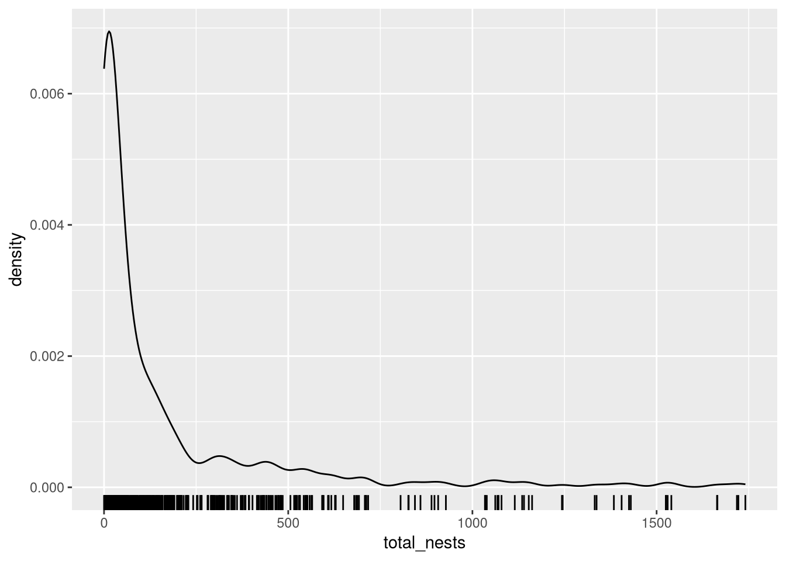
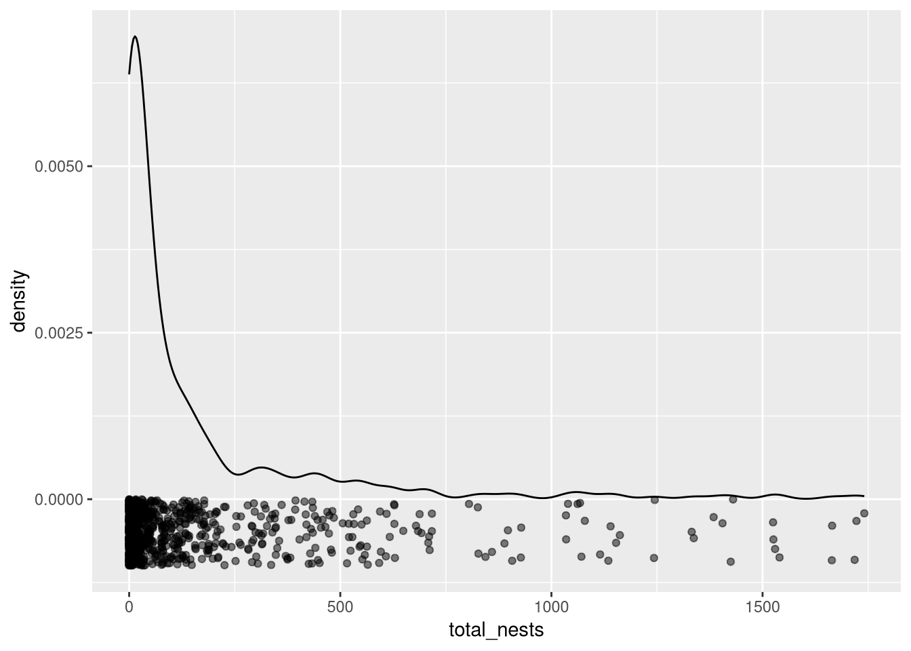
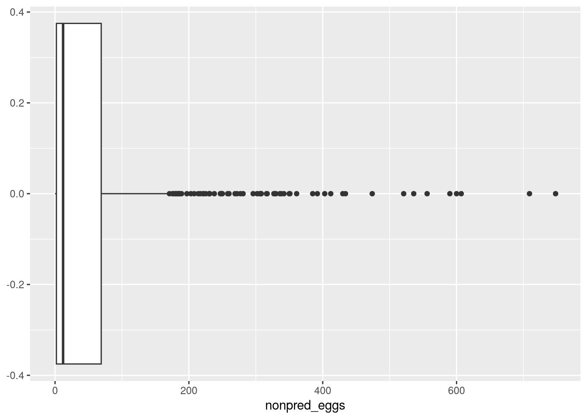
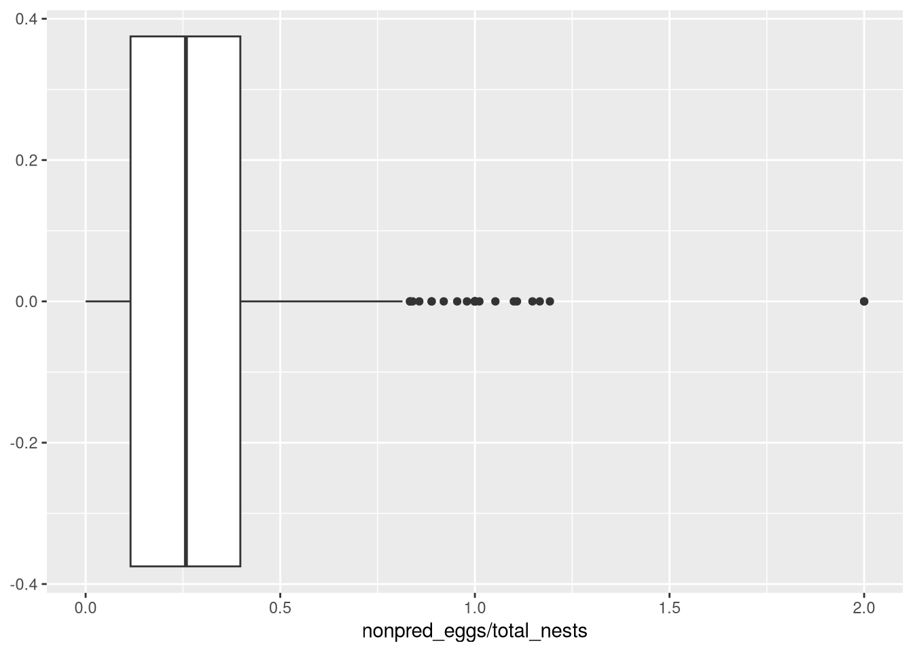
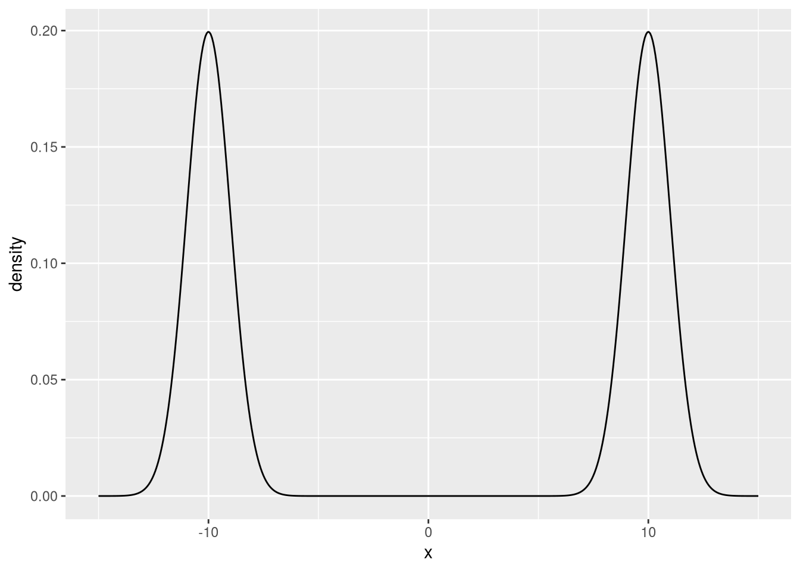
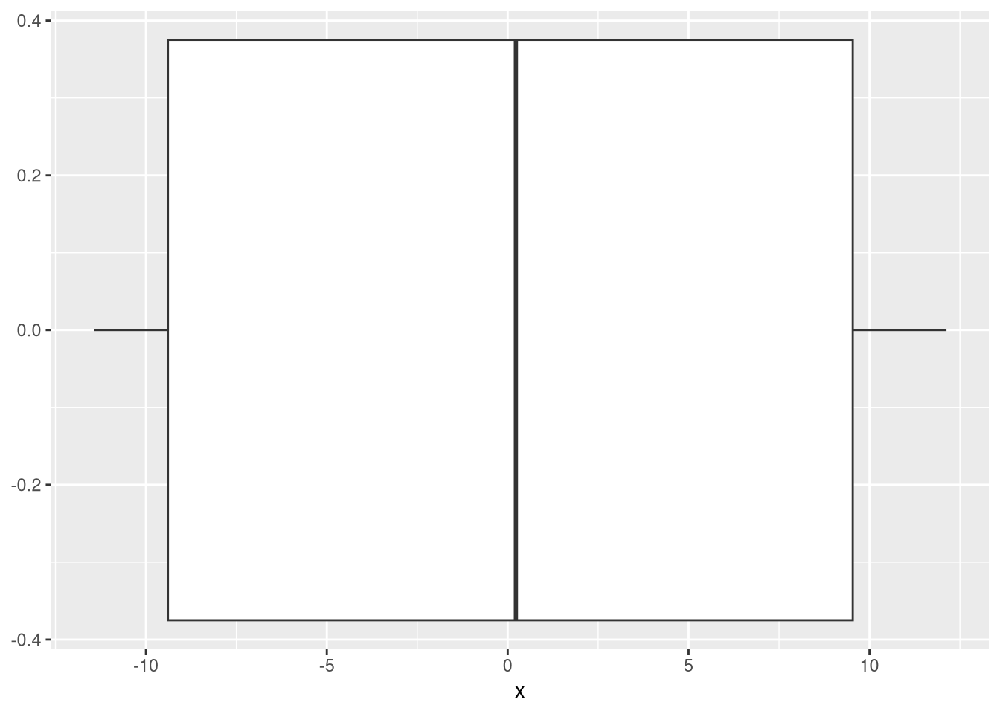

Explain what it means for a value to be an “outlier”
Locate and count outliers in a dataset
ImportantRequired Packages
This chapter uses the following R packages:
ggplot2
For a refresher about how to install and load packages, see the Packages section of DataLab’s R Basics workshop reader.
An outlier is an observation that’s substantively different from most of the others. Outliers are unusual, and unusual observations deserve extra scrutiny because they might be:
Unusually informative;
An error caused by how data were measured, recorded, or cleaned.
The definition of an outlier is broad, open to interpretation, and should be tailored to specific datasets and analysis goals, as is the case with many statistical ideas. This chapter explains a few ways to find outliers (among many), how to think through whether outliers are natural or erroneous, and what to do with erroneous outliers.
4.1 Searching Low-Density Regions
Picture the density curve of a distribution, like the one shown in Figure 3.5. Most observations occur where the density is high; that’s why it’s high. So outliers, observations that are unlike most of the others, must lie in regions of relatively low density.
As such, visualizing the distribution of a dataset (or feature) is an effective way to identify outliers. We can use familiar visualizations like histograms (Section 3.1) and density plots (Section 3.2). To help us see where individual observations are, we can mark them on the axis. The marks are called a rug.
Let’s make a density plot of total_nests from the California least terns dataset one more time, now with a rug:
Warning: Removed 8 rows containing non-finite outside the scale range
(`stat_density()`).
Warning: Removed 8 rows containing missing values or values outside the scale range
(`geom_rug()`).

Most of the observations are less than about 250 nests, and we can distinguish individual observations beyond about 750 nests. There’s no sharp dividing line where observations clearly become outliers, so how do we decide? One way is to use external information about the nesting habits of California least terns, such as research literature or personal expertise.
But remember why we’re looking for outliers: they simply get extra scrutiny. As long as they seem to be valid (not errors), we’ll treat them like any other observations and use them in our analyses. How we decide which observations are outliers shouldn’t affect the results much as long as we examine enough to catch errors.
NoteNote: Jitter
Rugs are difficult to read where there are lots of observations, because many marks get plotted on top of each another.
An alternative approach is to plot the observations as points. We can make the points slightly transparent to make the overlapping points easier to distinguish. We can also add small, random offset, called jitter, along the y-axis. Then the plot becomes:
Warning: Removed 8 rows containing non-finite outside the scale range
(`stat_density()`).
Warning: Removed 8 rows containing missing values or values outside the scale range
(`geom_point()`).

This takes more effort than a rug, since we have to poisition the points along the y-axis, but it’s also easier to read. See the documentation for geom_jitter to learn more about how to use jitter.
4.2 Box Plots
Observations are unlikely to be very far away from the center of their distribution, so we can use distance from the center to identify outliers. A box plot makes this approach visual. A box plot is yet another kind of distribution plot, like a histogram or density plot.
In a box plot, the central 50% of the data are represented by a box. The left edge of the box is at the 25th percentile, and the right edge of the box is at the 75th percentile. The box is split by a heavy line at the median.
The box also has whiskers, lines that represent the tails of the data. The whiskers extend from each end of the box to the farthest observation within \(1.5 \times \textrm{IQR}\). Observations farther away are plotted as points and often treated as outliers.
NoteNote: Whiskers
There are actually many different conventions for how to draw the whiskers in a box plot. The \(1.5 \times \textrm{IQR}\) convention is widely-used and is the default in R.
To demonstrate box plots, suppose we want to know whether there are any unusually dangerous sites where California least terns nest, where the danger is caused by something other than natural predators. There are several nonpred_ features in the dataset we can use to investigate. Let’s focus on nonpred_eggs, which the documentation describes as non-predator-related mortalities of eggs. Here’s a box plot of the feature:
Warning: Removed 164 rows containing non-finite outside the scale range
(`stat_boxplot()`).

Figure 4.1
Most observations are between 0 and about 75 mortalities. The left whisker is barely visible, because nonpred_eggs is never negative. The right whisker extends to about 175 mortalities. We might want to treat the observations beyond the whisker as outliers, and the plot shows there are a lot of them, with the largest around 750 mortalities.
Some sites have more eggs than others, so a high count of non-predator egg mortalities might not mean a site is unusually dangerous. We can find dangerous sites by looking at non-predator egg mortalities per nest:
Warning: Removed 206 rows containing non-finite outside the scale range
(`stat_boxplot()`).

Figure 4.2
There are now just a few observations that stand out as outliers compared to the others. We could continue this analaysis by examining each of these observations individually, to check whick sites they’re from and whether they have any other unusual features.
Tip
For most datasets, we recommend density plots over box plots, because density plots show more detail about the shape of the entire distribution. That said, when the number of observations is small, we prefer box plots. Less detail becomes a safeguard against overinterpretation when the evidence for a detail may be just 1 or 2 values.
WarningWarning: Outliers at the Center
Observations far from the center of a distribution are often outliers, but outliers can also occur close to the center! Remember that an outlier is just an unusual or unlikely observation.
For example, consider this multimodal distribution with mean 0:

Figure 4.3
In this case, we might say an observation at 0 is an outlier, since the density very low there. Also notice how a sample from the distribution looks as a box plot:

Figure 4.4
The short whiskers are the only indication that almost all of the observations are close to -10 and 10 rather than 0. This shows how box plots can mislead more easily than density plots.
4.3 Standardization
The mean (Section 3.3.3) estimates the center of a distribution, so we can look for outliers among observations that are far away from the mean. A convenient way to do this is to standardize each observation by subtracting the mean and dividing by the standard deviation. The resulting statistic is called the standard score or the z-score.
NoteDefinition: Standard Score
Mathematically, for an observation \(x\) from a distribution with mean \(\mu\) and standard deviation \(\sigma\), the standard score \(z\) is defined as
When the mean and standard deviation are unknown, but we have a sample, we can estimate with the sample mean \(\bar{x}\) and sample standard deviation \(s\).
The standard score is convenient because it measures distance in multiples of the standard deviation rather than the original units. This means we can compare standard scores across different features with different units. Moreover, for almost any distribution, at least 88% of all observations must be within 3 standard deviations of the mean. So to search for outliers, we can simply search for observations with a standard score greater than or equal to 3.
NoteNote: Chebyshev’s Inequality
The at least 88% within 3 standard deviations rule is a specific case of a statistical theorem called Chebyshev’s Inequality.
In R, the scale function computes standard scores. Let’s compute the standard scores for the nonpred_eggs feature, then find the row numbers and values of the observations where nonpred_eggs is more than 3 standard deviations from the mean:
z =scale(terns$nonpred_eggs)head(z)
[,1]
[1,] -0.5403550
[2,] NA
[3,] 0.6008708
[4,] NA
[5,] -0.5497867
[6,] -0.5686499
All of these observations are more than 3 standard deviations greater than the mean. For the most part, this is consistent with what we found by using a box plot in Section 4.2. So we might want to treat these observations as outliers and do a more thorough investigation.
4.4 Investigating Outliers
After locating outliers in a dataset, the next step is to investigate each one indvidually. The investigation has two goals:
First, we want to determine whether the outlier is valid or erroneous. Start by checking all of the observation’s features. Some questions to ask are:
How many features are outliers?
Are any of them clearly erroneous, nonsensical, or impossible?
Are any of the features derived from others? If so, are they consistent with the feature(s) from which they’re derived?
Does the documentation say anything about this particular kind of outlier?
External sources, such as related research literature, domain expertise, and direct communication with the people who created the dataset, can also provide strong evidence as to whether an observation is valid or not.
Second, we want to determine whether the outlier provides any special insight relevant to the purpose of the overarching analysis. How to check this depends on what that purpose is, but the exploration techniques described in this reader are often suitable.
When an outlier is valid, keep it.
When an outlier is erroneous, sometimes it’s possible to correct it. Check whether any of the observation’s other features suggest the correct value.
If the error can’t be corrected with the other features, sometimes it’s possible to approximate the correct value by using the mean or median (or some other suitable statistic) of a sample of similar observations. This is called imputing the value. Whether it’s statistically appropriate to impute a value depends on what the observation and feature represent.
If neither correction nor imputation are possible, replace each of the observation’s erroneous features with a missing value NA. This way the observation’s valid features are preserved. If the entire observation is erroneous, remove it from the dataset.
Important
Above all else, make sure to document the process you use to locate and handle the outliers in a dataset. The idea is to make the analysis as transparent as possible, so that no one is left wondering whether your conclusions are valid.
Tip
If an outlier is valid but interferes with a plot you want to make, adjust the x and y limits of the plot rather than removing the outlier from the dataset. If the outlier is no longer visible, make sure to mention it in the plot’s caption or description.